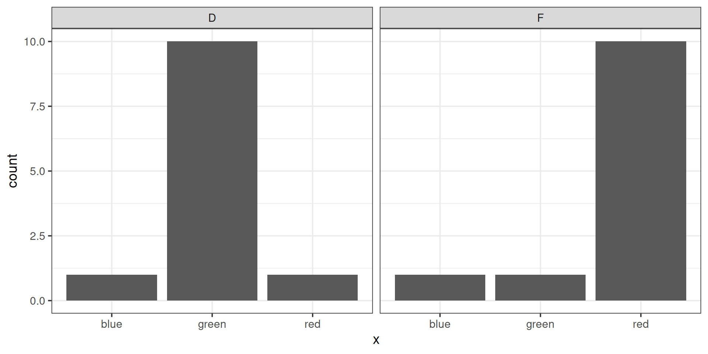
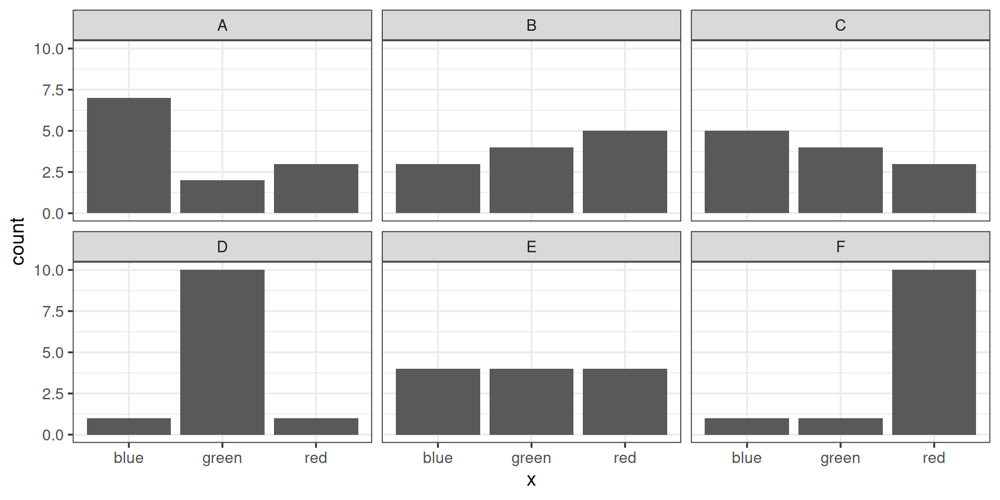
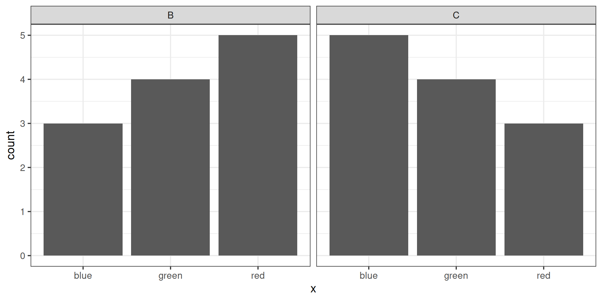

Hypothesis Tests II
STAT 20: Introduction to Probability and Statistics
Agenda
- Announcements
- Reading Questions: Hypothesis Tests II
- Break
- Worksheet: Hypothesis Tests II
- Appendix
Announcements
- Quiz 3 on Thursday
- Portfolio 5 (Mon., Tue., Wed.) due Friday at 5pm
Reading Questions
- Please put your laptops under your desk and your phones away.
- Write your name, ID, and bubble in Version “A” on your answer sheet.
- You may work only with those at your table!
Read this first.
Consider a setting where you have observed data from 120 rolls of a six sided die. The proportion of rolls of each outcome were \(\hat{p}_1 = 0.21\), \(\hat{p}_2 = 0.16\), \(\hat{p}_3 = 0.16\), \(\hat{p}_4 = 0.14\), \(\hat{p}_5 = 0.18\), \(\hat{p}_6 = 0.15\). The proportion of 1s seem a bit high, so you conduct a hypothesis test to determine whether or not this data is consistent with it being a fair six-sided die. Let \(\hat{p}_i\) be the observed proportion of rolls on side \(i\) and let \(p_i\) be the corresponding true probability (a parameter).
Which of the following is the correct articulation of the null hypothesis?
- A: \(H_A: \hat{p}_1 = 0.21, \hat{p}_2 = 0.16, \hat{p}_3 = 0.16, \hat{p}_4 = 0.14, \hat{p}_5 = 0.18, \hat{p}_6 = 0.15\)
- B: \(H_0: \hat{p}_1 = 0.21, \hat{p}_2 = 0.16, \hat{p}_3 = 0.16, \hat{p}_4 = 0.14, \hat{p}_5 = 0.18, \hat{p}_6 = 0.15\)
- C: \(H_0: \hat{p}_1 = 1/6, \hat{p}_2 = 1/6, \hat{p}_3 = 1/6, \hat{p}_4 = 1/6, \hat{p}_5 = 1/6, \hat{p}_6 = 1/6\)
- D: \(H_0: p_1 = 1/6, p_2 = 1/6, p_3 = 1/6, p_4 = 1/6, p_5 = 1/6, p_6 = 1/6\)
01:00
You would like to simulate 500 data sets using the process by which you observed your data under the null hypothesis. How would you simulate one such dataset?
A: Make a box with 6 tickets, each one with a digit 1 through 6 on it. Draw 120 tickets out of it without replacement.
B: Make a box with 6 tickets, each one with a digit 1 through 6 on it. Draw 500 tickets out of it with replacement.
C: Make a box with 6 tickets, each one with a digit 1 through 6 on it. Draw 500 tickets out of it without replacement.
D: Make a box with 6 tickets, each one with a digit 1 through 6 on it. Draw 120 tickets out of it with replacement.
00:40
Read this first.
You calculate one chi-squared statistic per data set (for a total of 500 statistics), and plot a null distribution with these 500 statistics. Your observed chi-squared statistic lies in the center of the null distribution.
What does the above tell you about the relationship between your data and your null hypothesis?
- A: The data is consistent with the null hypothesis.
- B: The data is inconsistent with the null hypothesis.
00:30
Suppose you set a significance level of \(\alpha = 0.02\) before running the hypothesis test, and then calculate a p-value after creating the null distribution. Based on the location of your observed test statistic, what is most likely?
- A: The p-value is less than \(\alpha\).
- B: We need more information to determine an answer.
- C: The p-value is greater than \(\alpha\).
00:30
Break
05:00
Worksheet: Hypothesis Tests
30:00
Appendix - More practice!
Concept Questions
Which pair of plots would have the greatest chi-squared distance between them? (consider one of them the “observed” and the other the “expected”)

01:00
Chi-squareds Compared
\[ \frac{(1-1)^2}{1} + \frac{(10 - 1)^2}{1} + \frac{(1 - 10)^2}{10} \\ 0 + 81 + \frac{81}{10} = 89.1 \]

\[ \frac{(3-5)^2}{5} + \frac{(4-4)^2}{4} + \frac{(5-3)^2}{3} \\ \frac{4}{5} + 0 + \frac{4}{3} = 2.13 \]
An In-class Experiment
In order to demonstrate how to conduct a hypothesis test through simulation, we will be collecting data from this class using a poll.
You will have only 15 seconds to answer the following multiple choice question, so please get ready at pollev.com…
The two shapes above have simple first names:
- Bouba
- Kiki
Which of the two names belongs to the shape on the left?
00:15
Steps of a Hypothesis Test
- Assert a model for how the data was generated (the null hypothesis)
- Select a test statistic that bears on that null hypothesis (a mean, a proportion, a difference in means, a difference in proportions, etc).
- Approximate the sampling distribution of that statistic under the null hypothesis (aka the null distribution)
- Assess the degree of consistency between that distribution and the test statistic that was actually observed (either visually or by calculating a p-value)
1. The Null Hypothesis
- Let \(p_k\) be the probability that a person selects Kiki for the shape on the left.
- Let \(\hat{p}_k\) be the sample proportion of people that selected Kiki for the shape on the left.
What is a statement of the null hypothesis that corresponds to the notion the link between names and shapes is arbitrary?
01:00
2. Select a test statistic
\[\hat{p}_k = \frac{\textrm{Number who chose "Kiki"}}{\textrm{Total number of people}}\]
Note: you could also simply \(n_k\), the number of people who chose “Kiki”.
3. Approximate the null distribution
Our technique: simulate data from a world in which the null is true, then calculate the test statistic on the simulated data.
Which simulation method(s) align with the null hypothesis and our data collection process?
01:00
Simulating the null using infer
4. Assess the consistency of the data and the null
4. Assess the consistency of the data and the null
The p-value
What is the proper interpretation of this p-value?
01:00
The Bouba / Kiki Effect